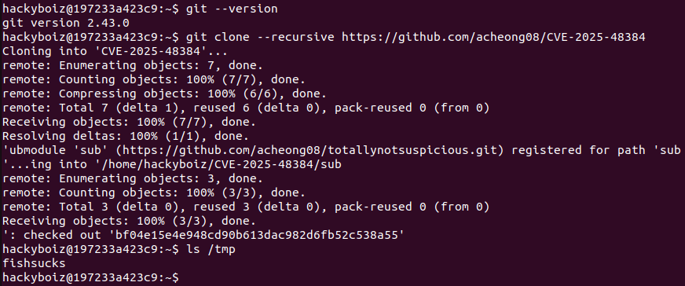

[하루한줄] CVE-2025-48384: Git CLI의 임의 파일 쓰기 취약점
URL
- https://nvd.nist.gov/vuln/detail/CVE-2025-48384
- https://dgl.cx/2025/07/git-clone-submodule-cve-2025-48384
Target
Git CLI(macOS 및 Linux)
- Git ≤ 2.43.6
- 2.44.0 ≤ Git ≤ 2.44.3
- 2.45.0 ≤ Git ≤ 2.45.3
- 2.46.0 ≤ Git ≤ 2.46.3
- 2.47.0 ≤ Git ≤ 2.47.2
- 2.48.0 ≤ Git ≤ 2.48.1
- 2.49.0, 2.50.0
Explain
Git은 하나의 저장소 안에 다른 Git 저장소를 포함하는 서브모듈(submodule) 기능을 지원합니다. 이 기능은 보통 외부 라이브러리나 공통 코드를 별도로 관리할 때 사용되며, 이 때 Git은 서브모듈의 경로(path), 원격 저장소 주소(url) 등의 정보를 .gitmodules 파일에 저장합니다. 이 파일은 저장소에 커밋되어 함께 전파되며, Git은 이를 기반으로 하위 모듈을 클론하거나 초기화합니다.
이 .gitmodules 파일은 .ini 스타일의 구문을 사용합니다.
[section]
key = value그리고 Git은 DOS 스타일 줄바꿈 방식인 CR+LF (Carriage Return + Line Feed)을 지원합니다.
- CR(Carriage Return):
\r, 커서를 현재 줄의 맨 앞으로 이동시킵니다. - LF(Line Feed):
\n, 커서를 다음 줄로 이동시킵니다
Git이 구성 파일을 읽을 때는 \r 문자를 제거하는 로직이 있으며, 이 코드는 config.c 파일의 get_next_char() 함수에서 다음과 같이 구현되었습니다.
static int get_next_char(struct config_source *cs)
{
int c = cs->do_fgetc(cs);
if (c == '\r') { // [1]
/* DOS like systems */
c = cs->do_fgetc(cs);
if (c != '\n') { //[2]
if (c != EOF)
cs->do_ungetc(c, cs);
c = '\r';
}
}[1] 문자에 \r이 있을 때, 다음 문자가 \n이면 → \r은 제거되고 \n만 반환되지만,
[2]\r 다음 문자가 \n이 아니면 → \r은 그대로 반환되고, 다음 문자는 다시 되돌려져 다음 호출에서 다시 읽히게 됩니다 (ungetc)
이 처리 방식은 줄 단위로 동작하기 때문에, 줄 끝에 단독으로 존재하는 \r은 항상 제거됩니다.
문제는 Git이 .gitmodules 파일을 읽을 때와 쓸 때의 처리 방식이 다르다는 점입니다. Git은 .gitmidules 파일을 읽을 때 줄 끝에 있는 \r을 자동으로 제거하지만, 나중에 이 값을 설정 파일에 쓸 때는 \r을 제거하지 않고 그대로 저장합니다.
이로 인해 Git 내부에서 처리되는 경로 값이 읽을 때와 쓸 때 다르게 인식되는 상황이 발생합니다. 공격자는 이 불일치를 악용해 서브 모듈이 의도치 않은 경로에 복제되도록 조작할 수 있습니다.
Git은 구성 파일을 읽기만 하는 것이 아니라, 설정 파일에 다시 쓸 수도 있습니다. 예를 들어 사용자가 git config 명령으로 설정 값을 바꾸면, 내부적으로 write_pair()함수를 사용해 key=value형식으로 파일에 저장하게 됩니다.
static ssize_t write_pair(int fd, const char *key, const char *value, [...]
{
[...]
/*
* Check to see if the value needs to be surrounded with a dq pair.
* Note that problematic characters are always backslash-quoted; this
* check is about not losing leading or trailing SP and strings that
* follow beginning-of-comment characters (i.e. ';' and '#') by the
* configuration parser.
*/
if (value[0] == ' ')
quote = "\"";
for (i = 0; value[i]; i++)
if (value[i] == ';' || value[i] == '#')
quote = "\"";
if (i && value[i - 1] == ' ')
quote = "\"";
strbuf_addf(&sb, "\t%s = %s", key + store->baselen + 1, quote);그런데 Git은 값을 쓸 때, 문자열에 공백이 포함되어 있거나, 특정 문자(;, #)가 있을 경우에만 큰 따옴표로 감싸서 저장합니다. \r 문자는 기존에는 따옴표 처리 대상이 아니어서, 값에 \r이 들어있더라도 따옴표 없이 그대로 저장되는 문제가 있었습니다.
예를 들어 .gitmodules 파일에 아래와 같은 서브모듈 설정이 있다고 가정해봅시다.
[submodule "foo"]
path = "foo^M"Git은 이 파일을 읽을 때 줄 끝의 ^M (즉 \r)을 제거하기 때문에 path = "foo" 로 인식하고, “foo”경로에 대해 유효성 검사를 합니다.
하지만 이후 이 경로 정보가 Git 내부 설정파일 (ex. .git/modules/foo/config) 에 기록될 때는 다음과 같이 저장됩니다.
[core]
workdir = ../../../foo^M여기서 중요한 점은 Git이 이미 .gitmodules에서 읽은 신뢰할 수 없는 경로(path)에 대해 유효성 검사를 마쳤다는 것입니다. 그런데 이 값이 다시 설정 파일에서 읽힐 때는, 줄 끝의 \r을 자동으로 제거하기 때문에, 여전이 “foo”처럼 읽히게 됩니다.
즉, Git이 “foo” 경로라고 생각하면서 작업을 진행하지만 실제로는 “foo^M” 디렉토리에 서브모듈을 복제합니다.
Exploit
git clone --recursive 명령은 오픈소스 프로젝트의 README에서 자주 권장되기 때문에, 공격자가 이 명령을 포함한 악성 저장소를 배포하고 사용자가 이를 실행하게 유도함으로써 임의 파일 쓰기를 발생시킬 수 있습니다.

취약한 git 버전을 대상으로 공개된 PoC를 클론하면 tmp 디렉토리 아래에 파일이 비정상적으로 생성된 것을 확인할 수 있습니다.
해당 취약점은 2.43.7, 2.44.4, 2.45.4, 2.46.4, 2.47.3, 2.48.2, 2.49.1, 2.50.1 이후 버전에서 패치되었습니다.
Reference
- https://dgl.cx/2025/07/git-clone-submodule-cve-2025-48384
- https://github.com/acheong08/CVE-2025-48384?tab=readme-ov-file
- https://securitylabs.datadoghq.com/articles/git-arbitrary-file-write
- https://arcticwolf.com/resources/blog/poc-available-for-high-severity-arbitrary-file-write-in-git-cli-cve-2025-48384/

본 글은 CC BY-SA 4.0 라이선스로 배포됩니다. 공유 또는 변경 시 반드시 출처를 남겨주시기 바랍니다.